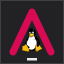
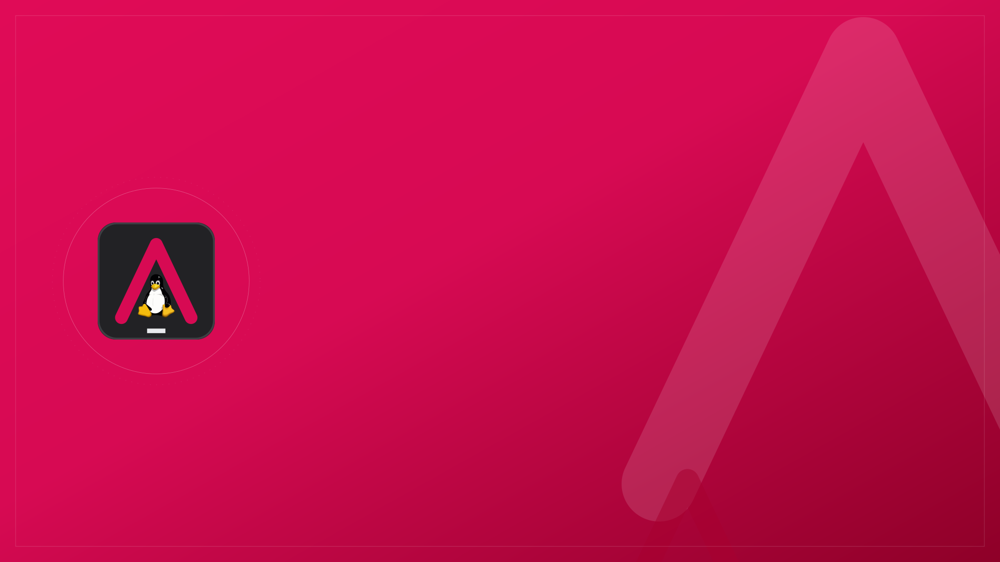
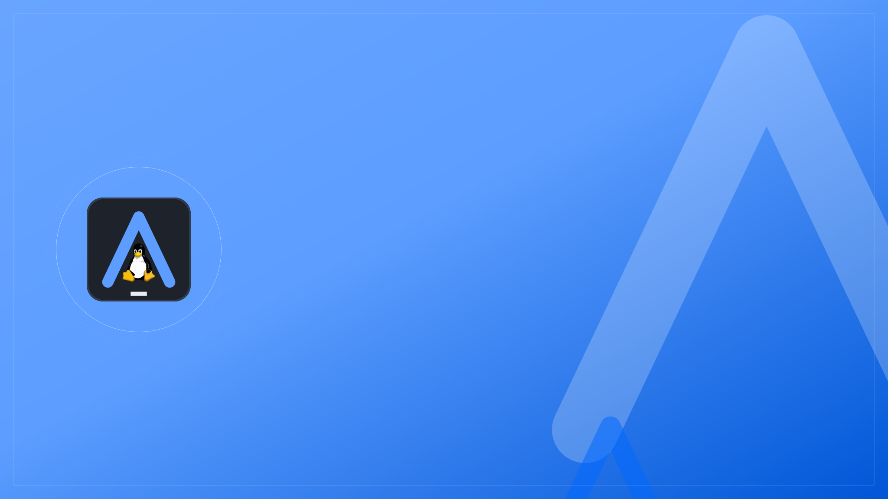
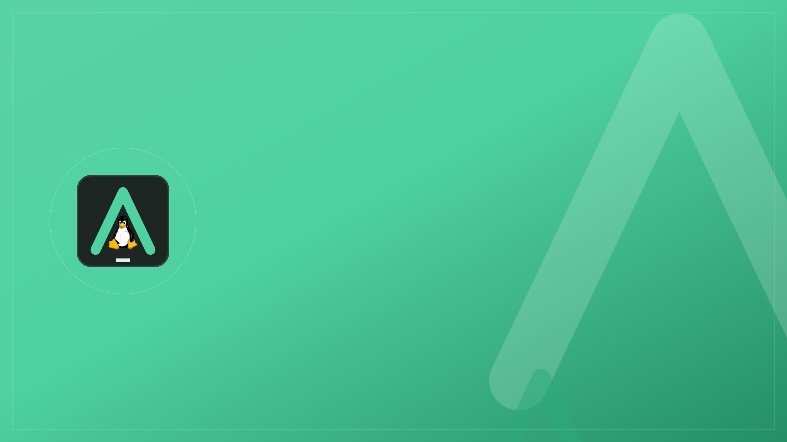
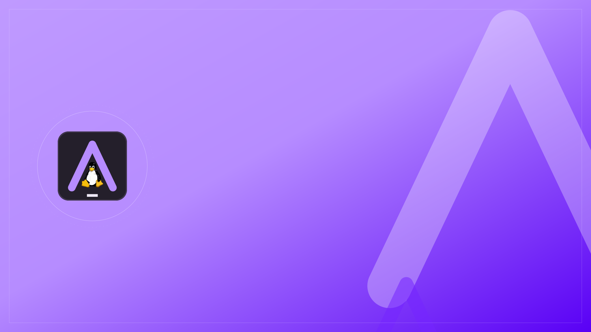
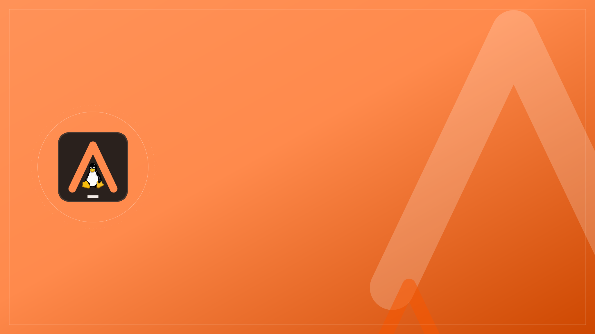
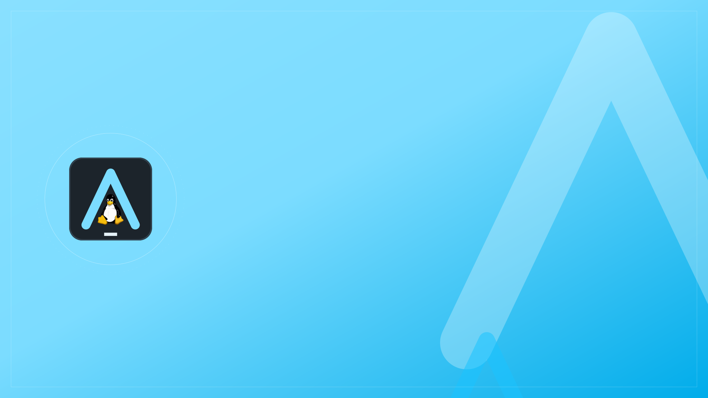
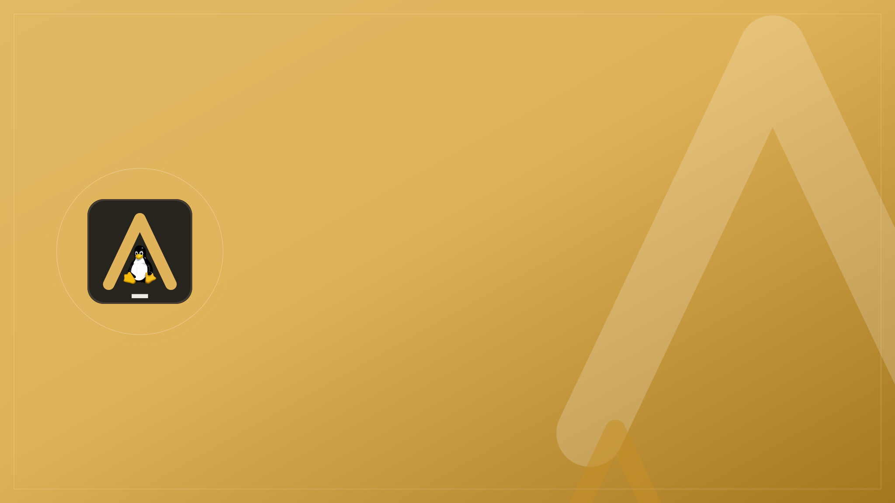
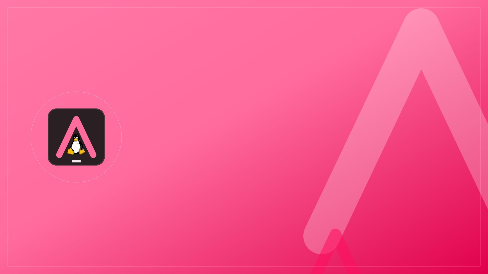
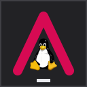

artwork / logo, themes, wallpapers
aa-linux
Rounded A + Tux
The selected mark combines the rounded A-shaped road, the real Tux mascot, and the terminal cursor. This page collects the primary mark and the practical derivatives for favicons, repository avatars, and lockups, plus the eight desktop color themes and matching Redline wallpapers.



Variations
Use the primary mark wherever the badge has room. The icon drops the cursor for small favicons. The badge variant rounds the outer square for app-icon and avatar surfaces.


Icon
favicon


App icon
rounded badge


Inverse
red surface


Transparent mark
dark surfaces

A-only fallback
16px


Lockup
The horizontal lockup pairs the primary mark with an outlined DejaVu Sans Mono Bold wordmark. The wordmark is converted to paths, so the file does not depend on a system font.


Color
The primary accent is Debian red. The deeper red is available for borders and darker surfaces. Tux keeps its original black, white, and amber artwork.
Debian red#D70A53
Deep red#A80030
Surface#222225
Foreground#E8E9ED
Tux white#FFFFFF
Tux black#111319
Tux amber#E5C07B
Frame line#3F3F44
Themes
Each desktop theme is a complete eight-key palette. The eight bundled
presets are named after their wallpapers, so picking a colorway in the
wallpaper picker recolors the bar, popups, window theme, terminal colors,
and onboarding keyboard together. Theme.qml watches
theme/colors.ini and updates live with no restart.
Redline
#D70A53Default. Debian red on the carbon surface used by the project site.
- bg
#222225 - alt
#26262A - fg
#E8E9ED - border
#3F3F44 - primary
#D70A53 - secondary
#E5C07B - alert
#FF6B9D - disabled
#5C5C64


Cobalt
#5C9DFFElectric blue on deep navy, with a cyan secondary and pink alert.
- bg
#1D222B - alt
#222834 - fg
#E6EBF5 - border
#343D4E - primary
#5C9DFF - secondary
#8BE9FD - alert
#FF7A9C - disabled
#586274


Mint
#4FD1A1Soft green on dark teal, with a warm gold secondary.
- bg
#1D2623 - alt
#222D29 - fg
#E5F0EA - border
#34443D - primary
#4FD1A1 - secondary
#E5C07B - alert
#FF8A80 - disabled
#56665F


Violet
#B68CFFLavender accent on plum, with a pink secondary.
- bg
#241F2B - alt
#2A2433 - fg
#EEE8F6 - border
#40364D - primary
#B68CFF - secondary
#FF9ECB - alert
#FF6B9D - disabled
#655C73


Ember
#FF8A4CWarm orange on charcoal brown, with gold and coral accents.
- bg
#2A211D - alt
#302722 - fg
#F3EBE5 - border
#493A32 - primary
#FF8A4C - secondary
#E5C07B - alert
#FF6B6B - disabled
#6D5C53


Ice
#7BDCFFPale cyan on slate blue, with a periwinkle secondary.
- bg
#1C242B - alt
#212B33 - fg
#E5F2F8 - border
#32434F - primary
#7BDCFF - secondary
#B7C9FF - alert
#FF6B9D - disabled
#566773


Sand
#E0B35ADesert gold on warm brown, with a darker gold secondary.
- bg
#27231D - alt
#2E2922 - fg
#F1ECE3 - border
#453D32 - primary
#E0B35A - secondary
#D9A441 - alert
#FF8A65 - disabled
#6A6154


Blush
#FF6B9DRose pink on mauve, with a soft pink secondary.
- bg
#2A2024 - alt
#31252A - fg
#F4E8EC - border
#4A3540 - primary
#FF6B9D - secondary
#FFB3C7 - alert
#FF8A80 - disabled
#6D5862


Wallpapers
Eight Redline wallpapers, one per color theme. Each is built from the
aa-linux mark and its theme palette, with no text so the desktop chrome
can sit on top. The SVGs are editable sources; PNG exports are
2560 × 1440. The bundled desktop uses 1280 × 720 JPEG copies from
openbox-desktop/config/wallpaper/.
Redline
2560 × 1440
Debian-red field, cropped A, carbon badge. The default colorway.
Cobalt
2560 × 1440
Deep navy field, cropped A, carbon badge.
Mint
2560 × 1440
Dark teal field, cropped A, carbon badge.
Violet
2560 × 1440
Plum field, cropped A, carbon badge.
Ember
2560 × 1440
Warm charcoal field, cropped A, carbon badge.
Ice
2560 × 1440
Slate-blue field, cropped A, carbon badge.
Sand
2560 × 1440
Warm brown field, cropped A, carbon badge.
Blush
2560 × 1440
Mauve field, cropped A, carbon badge.
Sizing
Use 64px or larger when Tux details matter. The icon works at 32px; below that, switch to the A-only fallback.

128 primary64 primary
Clear space: at least 8 units on a 64-unit artboard (12.5%). Keep other marks and text outside the dashed line.
Usage
Do
- Use the primary mark on dark or light surfaces.
- Use the icon for favicons and the badge for avatars.
- Keep Tux in the original black, white, and amber.
- Keep the 12.5% clear space.
- Use the lockup when the project name is not already adjacent.
- Use the A-only fallback below 32px.
Don't
- Recolor Tux or flatten it into the red A.
- Add gradients, shadows, or outlines to the red A.
- Rotate, skew, or stretch the mark.
- Use the Debian swirl or imply Debian affiliation.
- Imply Google or Android Auto endorsement.
- Use the detailed primary mark below 32px.
Downloads
SVG is the source format. PNG exports are included for favicons and avatar surfaces.
| Asset | Format | Files | Use |
|---|---|---|---|
| Primary | SVG + PNG | SVG · 512 · 128 · 32 | Primary mark, 64px+ |
| Icon | SVG + PNG | SVG · 32 · 16 | Favicon, 32px |
| App icon | SVG + PNG | SVG · 512 · 128 | Repository avatar, launcher |
| Inverse | SVG + PNG | SVG · 512 | Red surface |
| Transparent mark | SVG + PNG | SVG · 512 | Dark surfaces |
| A-only fallback | SVG + PNG | SVG · 512 · 32 · 16 | 16px favicon |
| Wallpapers | SVG + PNG | Redline · Cobalt · Mint · Violet · Ember · Ice · Sand · Blush | Desktop backgrounds, 2560 × 1440 |
| Lockup, dark | SVG + PNG | SVG · 864 | Project header, dark |
| Lockup, light | SVG + PNG | SVG · 864 | Project header, light |